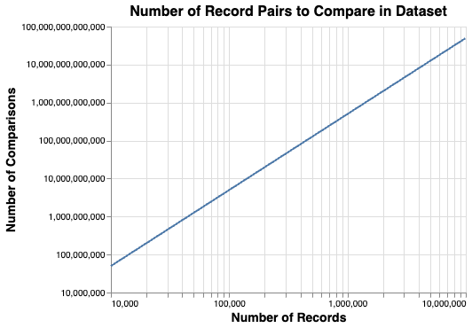

The Challenges of Record Linkage¶
One of the main challenges to overcome in record linkage is the scale of the problem.
The number of pairs of records to compare grows using the formula \(\frac{n\left(n-1\right)}2\), i.e. with (approximately) the square of the number of records, as shown in the following chart:

For example, a dataset of 1 million input records would generate around 500 billion pairwise record comparisons.
So, when datasets get bigger the amount of computational resource gets extremely large (and costly). In reality, we try and reduce the amount of computation required using blocking.
Blocking¶
Blocking is a technique for reducing the number of record pairs that are considered by a model.
Considering a dataset of 1 million records, comparing each record against all of the other records in the dataset generates ~500 billion pairwise comparisons. However, we know the vast majority of these record comparisons won't be matches, so processing the full ~500 billion comparisons would be largely pointless (as well as costly and time-consuming).
Instead, we can define a subset of potential comparisons using Blocking Rules. These are rules that define "blocks" of comparisons that should be considered. For example, the blocking rule:
"l.first_name = r.first_name and l.surname = r.surname"
will generate only those pairwise record comparisons where first name and surname match.
Within a Splink model, you can specify multiple Blocking Rules to ensure all potential matches are considered. These are provided as a list. Splink will then produce all record comparisons that satisfy at least one of your blocking rules.
Further Reading
For more information on blocking, please refer to this article
Choosing Blocking Rules¶
The aim of blocking rules is to recover all matching record pairs (i.e to have high recall).
It is less important if the blocking rules select some (or even many) record pairs which are not matches (i.e. high precision). Record comparisons that 'pass' the blocking rules are then put forward to the scoring/prediction step. The more pairs let through, the more computation is required at the prediction step.
Ultimately, the blocking process is a compromise between the amount of computational resource used when comparing records and capturing all true matches.
Even after blocking, the number of comparisons generated is usually much higher than the number of input records - often between 10 and 1,000 times higher. As a result, the performance of Splink is heavily influenced by the number of comparisons generated by the blocking rules, rather than the number of input records.
Getting the balance right between computational resource and capturing matches can be tricky, and is largely dependent on the specific datasets and use case of the linkage. In general, we recommend a strategy of starting with strict blocking rules, and gradually loosening them. Sticking to less than 10 million comparisons is a good place to start, before scaling jobs up to 100s of millions ( DuckDB on a laptop), or sometimes billions ( Spark or Athena).
Guidance for choosing Blocking Rules can be found in the two Blocking in Splink topic guides.
Taking blocking to the extremes
If you have a large dataset to deduplicate, let's consider the implications of two cases of taking blocking to the extremes:
Not enough blocking (ensuring all matches are captured)
There will be too many record pairs to consider, which will take an extremely long time to run (hours/days) or the process will be so large that it crashes.
Too much blocking (minimising computational resource)
There won't be enough records pairs to consider, so the model won't perform well (or will struggle to be trained at all).
Blocking in Splink¶
There are two areas in Splink where blocking is used:
-
The first is to generate pairwise comparisons when finding links (running
predict()). This is the sense in which 'blocking' is usually understood in the context of record linkage -
The second is a less familiar application of blocking: using it for model training.
each of which is described in their own, dedicated topic guide.